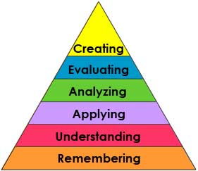
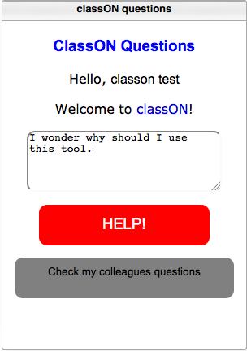
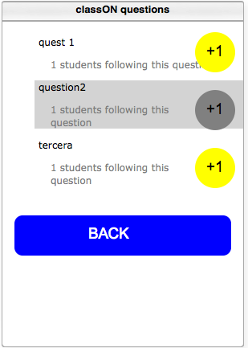
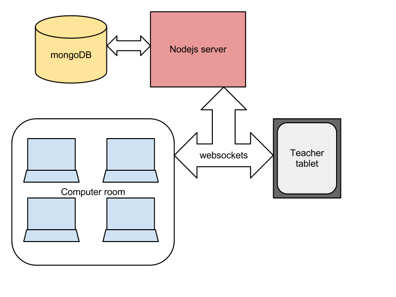

Web-based awareness tool for teachers
Israel Gutiérrez*
Teacher (it.uc3m.es/igrojas)
Researcher (mendeley.com/profiles/israel-gutierrez)
PhD student (@gootyfer)
* gootyfer
Where do I come from?
University Carlos III of Madrid, Spain
GAST research group
gradient lab
Are you aware of the hype about the flip classroom?
Remember the flip the classroom as the theme of recent educational revolutions?
Do you remember the Bloom's taxonomy?
The flip concept is not new at all.
But people prefers flip a taxonomy better than inverting it, or even not having a taxonomy at all!
Inspired by another nice post by Steve CollisWhat is it?
Awareness support tool for teachers and students
Lab sessions in a computer room (f2f)
Regulate interactions: feedback
Facilitates orchestration
Conception
Inspired in Dillebourg's lanterns for distributed awareness
Design principles of the tool
User Interface
Exploratory experiment in class
Preliminary results in ECTEL'11 (short paper)
Observations
Lab sessions were observed to justify the problem
Definitions of metrics
Published at ICALT'12 (full paper)
Case study
Course on Multimedia Applications
January to May 2012
Collection of events
Survey students and interview teachers
Focus on orchestration
What orchestration aspects can be improved by means of awareness?
Intervention and management
Assessment and planning
Partial results sent to ECTEL'12
ROLE widget
Winner of the 3rd ROLE widget competition!
classON-Questions: questions shared and rated in class
IWC and spaces (openapp)
ROLE widget
 Architecture
Further steps
Define peer support interventions
Try different strategies for dispatching feedback (not only FIFO)
Integration with authoring systems
want to know more?
use the source, Luke!
Finally, 3 aspects I am working on right now
Data visualization
engage students in the dynamics of the course
allow teachers to improve the learning design
simple, ad-hoc, straightforward (no dashboards!)
use d3 (or a similar tool)
Gamification
gamify to engage in learning
prizes according to personal progress
play with Mozilla Open Badges
Use cases
set up the environment for a use case of classON at your uni
any courses in which it would fit?
Thanks you very much for your attention!
I'll be very glad to answer some questions